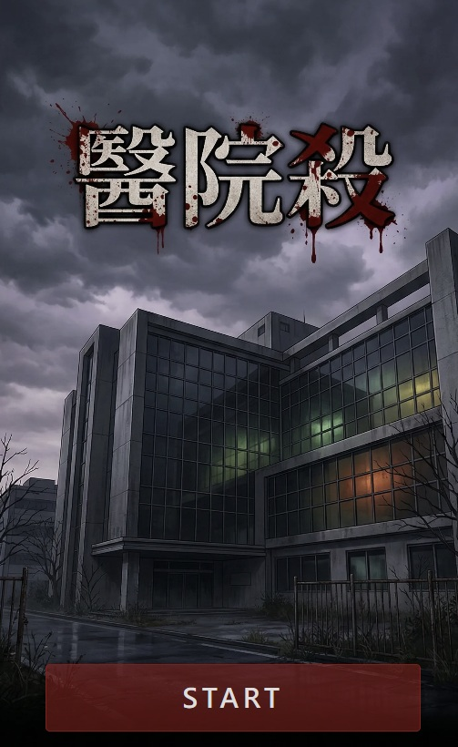
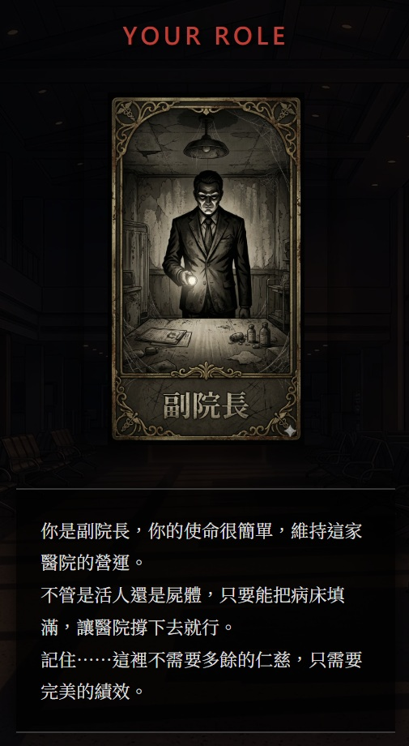
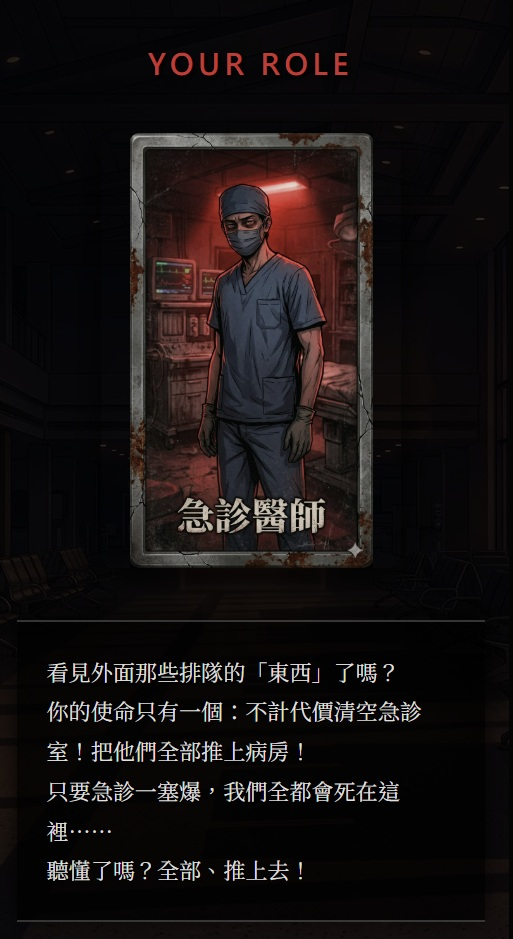
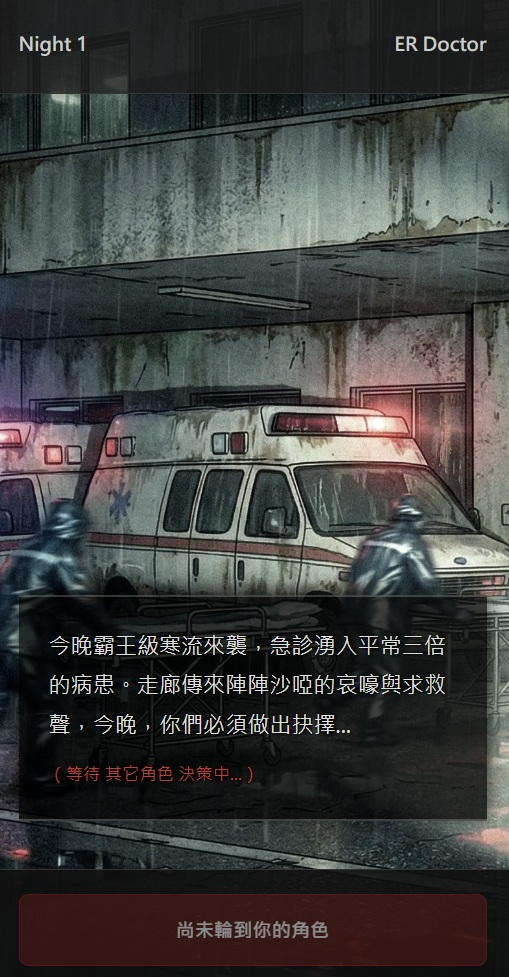
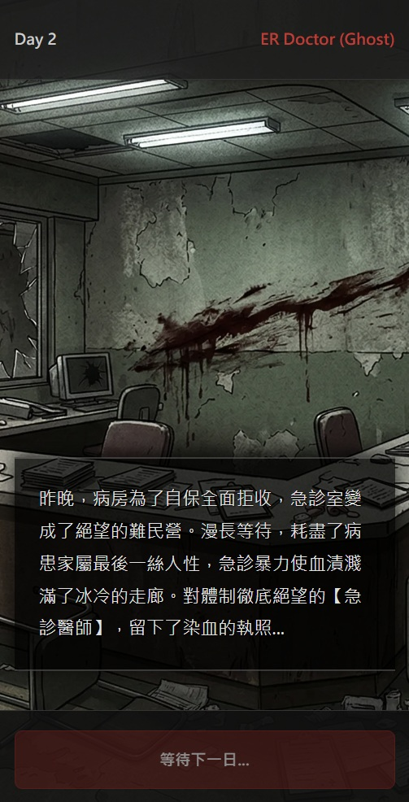
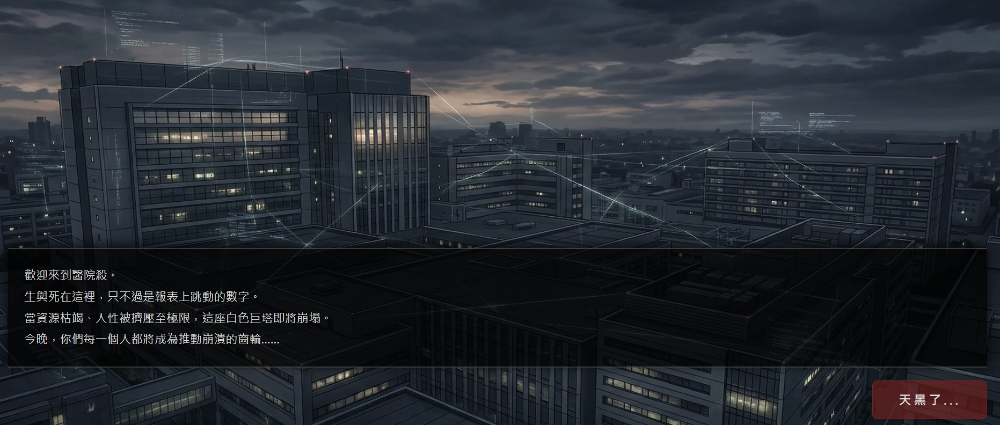
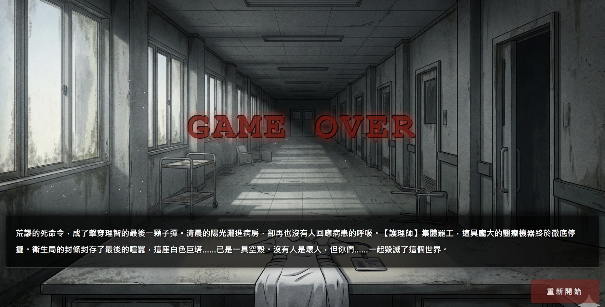

教學遊戲 · 互動教學
醫院殺
2025.11 · 個人專案

FIG. 09 — 產品主畫面
關於這個作品
醫院殺以狼人殺的輪轉投票機制為骨架，把場景搬進一座深夜急診室。
學生抽卡分配角色——副院長只在意床位績效，急診醫師面對生死兩難，護理長要維持秩序，護理師承受最前線的壓力。天黑之後，每個角色在手機上看到屬於自己的情境與選項，獨立投票做出決定；所有人的決策匯合後，才在大螢幕上揭曉這個夜晚的結局。
一個人的選擇，牽動所有人的命運——學生在遊戲中體驗醫療體系的結構性困境，沒有人是壞人，但錯誤的系統讓每個人都做出了錯誤的決定。
作品亮點
四角色各有隱藏立場：副院長、急診醫師、護理長、護理師
狼人殺機制：天黑後各角色在手機上獨立決策
全員決策匯合才揭曉結局，體驗連鎖後果
Firebase 即時同步，支援課堂大班規模
操作畫面





